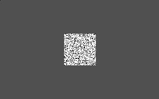

| [ < ] | [ > ] | [ << ] | [ Up ] | [ >> ] | [Top] | [Contents] | [Index] | [ ? ] |
RANDEXT Subfunction 1: random-dot square
Syntax:
RANDEXT 1, fillratio
Draws a 64x64 square of black and white pixels centered on a light gray full picture (320x200) background. Pixels are radomly colored white or black with a fillratio chance of being white. (Note this does not mean that exactly fillratio percent of the pixels will be white, but of course the squares will tend toward this average).
fillartio is given as a fraction between 0 and 1.0. For example, the testlist below creates a single square where each pixel has a 75% chance of being white, and 25% of being black.
%X[randext.cxr] %M2%C %I[1,1,.75] %B[1,20]#R |
The following picture is created:
